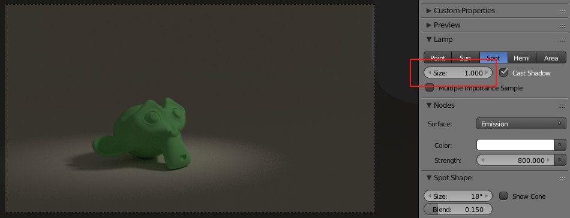
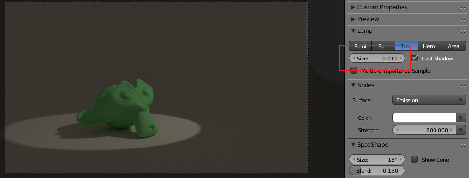
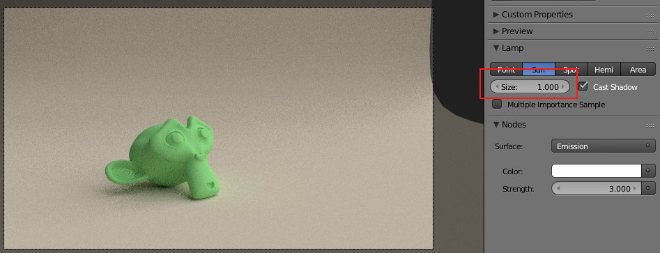
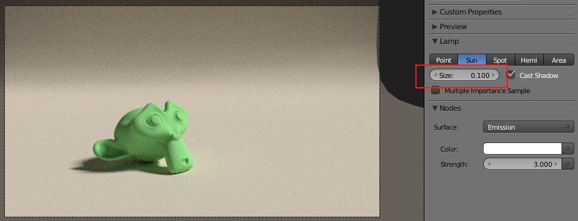
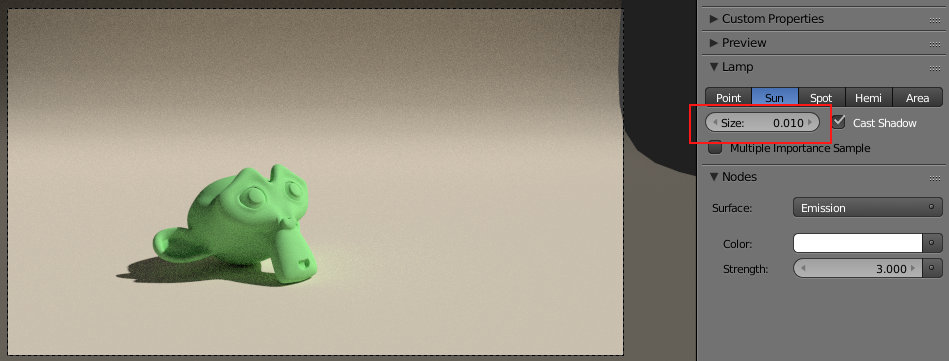
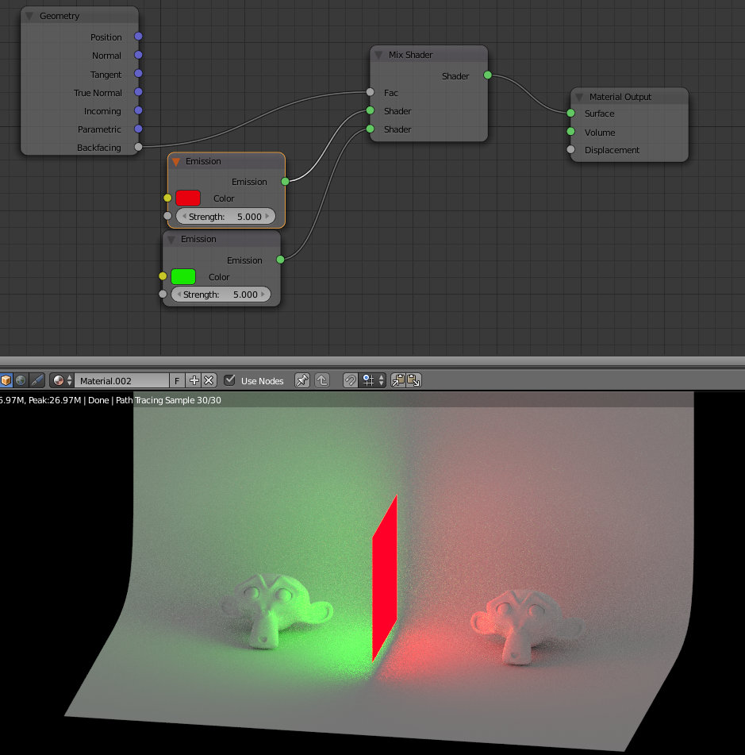
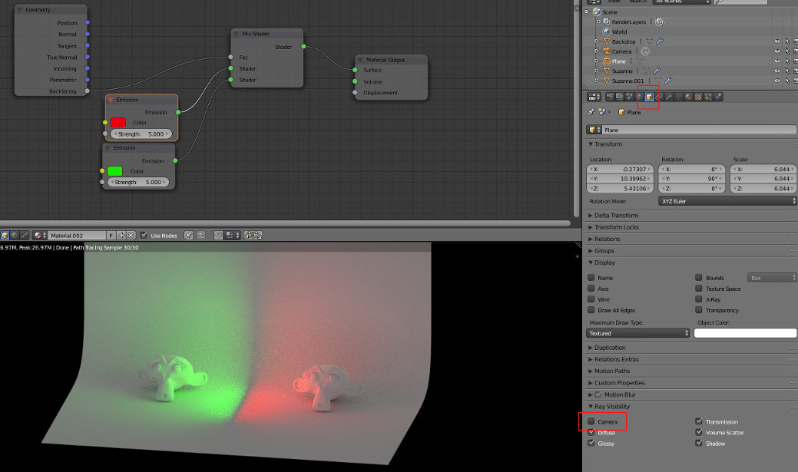

Para conhecer melhor as caraterísticas deste motor de rederização, sugere-se a consulta do texto Cycles.
Alterar o Shadow Size nas lâmpadas modifica drasticamente o resultado da iluminação.
Soft Shadows podem criar um ambiente calmo ou proporcionar uma iluminação de um dia nublado. As Hard Shadows destacam detalhes ou imitam uma iluminação de um dia de sol forte.
No exemplo abaixo só estamos a utilizar uma lâmpada Spot para iluminar a cena. Não é suficiente para construir uma sistema de iluminação eficiente mas permite ver a diferença provocada nas sombras pela alteração do Size. A única diferença entre as duas imagens é o Size.
No caso da Spot, o Spot Shape Size permite ainda definir a dimensão da região iluminada e o Blend permite definir a nitidez da transição entre área iluminada e área sem iluminação.
 Com a lâmpada Sun é mais visível o impacto global na cena. Novamente, a única alteração é o Size mas a primeira imagem apresenta uma iluminação tipo "dia nublado" e a última é mais próxima da luz num dia limpo de verão.


No Cycles, é possível (e comum!) utilizar um plano para iluminar a cena, como fonde de luz. Por pré-definição, a utilização do plano irá fazer com que a luz seja emitida nas duas direções. No entanto, a opção Backfacing do nó Geometry permite configurar esta funcionalidade. No exemplo abaixo, estamos a utilizar duas cores diferentes, o plano emite cores diferente em cada um dos lados. Se quiser que o plano só emita de um lado, basta desligar um dos dois nós "Emission" que estão a ser utilizados.
E pode "esconder" o plano (não é renderizado) desativando a opção de Camera no Ray Visibility. A iluminação que vez do plano contonua visível mas o plano não é renderizado. Esta opção é especialmente útil quando pretende simular luz de uma janela exterior, por exemplo. Coloque um plano na janela a emitir luz para o interior e desative a opção Camera. A cena irá surgir iluminada mas o plano que emite luz não será visível.
